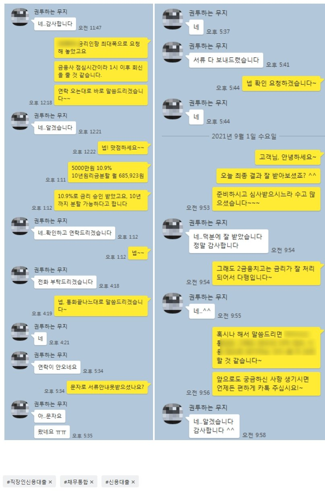

대부업 담보대출 사용중인 고객 신용대출 5000만 진행 사례
안녕하세요? 뱅크앤론 조영우 이사입니다~
오늘은 담보로 고액 대부업 대출 있으셨으나, 신용대출로 추가자금 진행해 드린 사례 공유 드리겠습니다~
해당 고객님의 대략적인 프로필은 아래와 같습니다.
- 40대 남성 직장인
- 4대가입, 7년 근무중, 세전연봉 6000만원
- 기대출 : 은행 4300만원, 저축은행 500만원, 담보대출(대부업) 1억
다른 조건을 문제 없었으나, 다소 신용 점수가 낮으셨고, 가족명의 주택으로 대부업에서 1억을 사용중이셨습니다. 이에 위의 내용이 무관한 곳으로 진행 도와 드렸고, 최종 5000만원 10.9% 10년 분할상환 조건으로 승인되어, 여유자금 충분히 마련할 수 있게 되셨습니다.
아래는 고객님과 나눈 실제 대화 내용입니다. 참고 부탁 드리겠습니다~
